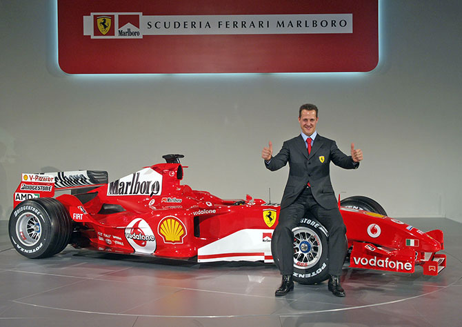
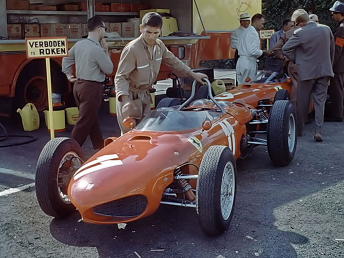
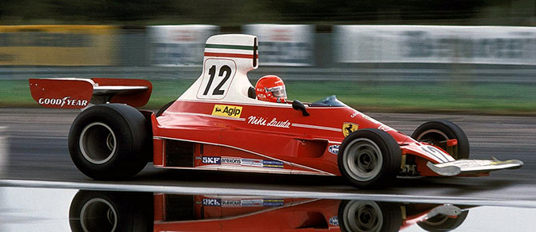

Гоночная история Scuderia Ferrari
15 августа 1947 года состоялся гоночный дебют Ferrari. За прошедшие с тех пор десятилетия
Scuderia Ferrari стала настоящей легендой автоспорта. По этому поводу мы вспоминаем самые
яркие моменты в гоночной истории команды.
Эпоха «Красного барона»

Сегодня Михаэль Шумахер является рекордсменом по числу завоёванных чемпионских титулов в
Формуле-1. Он становился обладателем кубка семь раз.Шумахер пришел в Ferrari в 1996 году.
К этому времени спортивные успехи команды представляли собой удручающее зрелище. На протяжении
17 лет команда не выигрывала чемпионат в личном зачёте. Но благодаря своему таланту Михаэль
начал приносить Ferrari победу в гонках.В 1999 году Шумахер попал в аварию на Гран-при
Великобритании. В результате столкновения он сломал ногу и был вынужден пропустить 6 гонок.
Это лишило его возможности завоевать свой третий титул. Тем не менее, Шумахер помог команде
выиграть Кубок конструкторов впервые с 1983 года.2000 год можно считать очередным триумфом
команды Scuderia Ferrari в Формуле-1. Михаэль Шумахер выиграл половину гонок и досрочно стал
чемпионом мира. Так началась рекордная серия побед, как для Шумахера, так и для Ferrari.
Немецкий гонщик становился чемпионом на протяжении пяти сезонов. К тому же эти победы
приносили команде Кубки конструкторов вплоть до сезона 2005 года.
Первая победа в чемпионате Формула-1

Первую победу в Кубке конструкторов команда Ferrari отпраздновала в 1961 году. Американский
пилот Фил Хилл стал первым в личном зачете и принес победу команде за рулем новой Ferrari 156 F1.
Первая победная серия

В 1975 году команда Ferrari представила свой новый болид 312T. Сам Энцо Феррари считал эту
машину крайне непривлекательной и не возлагал на нее больших надежд. Однако уже в этом
сезоне Ники Лауда выиграл за рулем Ferrari 312T 5 гран-при, что позволило ему стать чемпионом
мира, а команде получить Кубок конструкторов.В следующем сезоне Лауда вновь лидировал в
чемпионате, однако попал в страшную аварию на Нюрбургринге. Чудом выжив в огне, австрийский
пилот пропустил лишь два гран-при и в итоге завоевал для Ferrari Кубок конструкторов. Но сам
пилот упустил чемпионство, отказавшись от борьбы в последней гонке. Недавно полученная травма
глаз осложнила для него гонку в условиях дождя. Из-за этого поступка Энцо Феррари навсегда
охладел к австрийскому пилоту. И даже не смотря на то, что в следующем сезоне Лауда вновь
завоевал чемпионский титул для себя и Кубок конструкторов для команды, ему пришлось покинуть
Скудерию.
«Неожиданная» победа в 2007 году

58-й сезон Формулы-1 стал одним из самых захватывающих в новейшей истории соревнований. В этом
году дебютировал молодой британский гонщик Льюис Хэмильтон. На протяжении всего сезона велась
напряженная борьба между пилотами сразу нескольких команд. Особое место заняло соперничество между
Льюисом Хэмильтоном и Фернандо Алонсо из McLaren. В результате непримиримой борьбы оба гонщика
часто ошибались и теряли очки. Однако пилот Ferrari Кими Райкконен показывал более стабильные
результаты в ходе сезона, что позволило ему завоевать титул чемпиона в последней гонке, опередив
Хэмильтона и Алонсо лишь на 1 очко. Ferrari также завоевала Кубок конструкторов благодаря
дисквалификации команды McLaren из-за шпионского скандала.